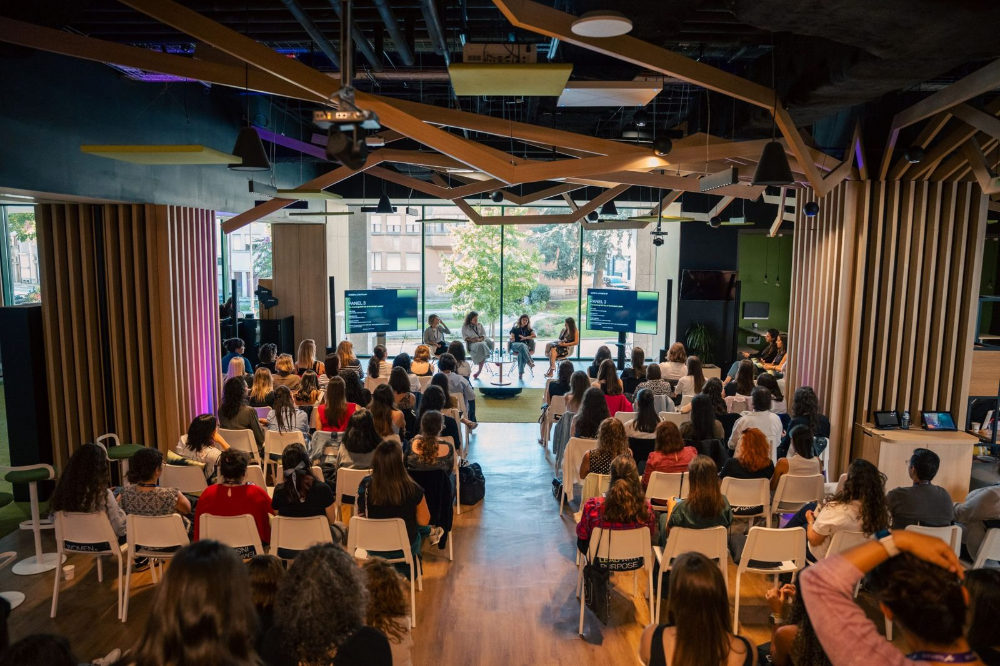
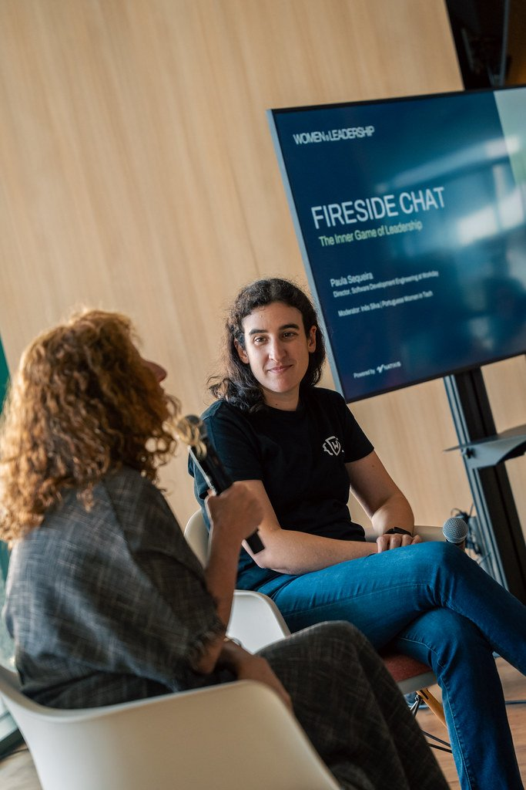

Speaking
I speak and moderate panels on women’s health, the business of health, longevity and women in tech. To invite me: hello@inessilva.me
Signature talks
Women's Health as an Investment Thesis
Why women's health belongs in an investment strategy, not at the margins of healthcare. From ovarian ageing to research funding, where unmet needs create opportunities and why evidence must come before hype.
Business Model Innovation in Healthcare: Building TejoMed
Why we bet on membership: continuous care and long-term doctor-patient relationships instead of one-off appointments - and how AI helps us make that work. An operator's perspective on building a prevention-first clinic people actually trust.
Funding Science Differently: Lessons from Women's Health and DeSci
What I learned building new ways to fund research that traditional systems overlook. A retrospective on what decentralized science delivered, what it didn't, and what it taught me about getting women's health research funded.
Why We Need More Women Building the Future
What actually moves the needle - and what doesn't. From founding Portuguese Women in Tech to advising FemTech Portugal, a candid look at community, capital and who gets to build the future.
Past events
Women & Leadership 2026
A Portuguese Women in Tech conference
Host and moderator ·


SIM Conference 2026
Upgraded: Engineering Health, Performance and Longevity
Moderator ·


Women & Wealth 2026
A Portuguese Women in Tech conference, at BLIP in Porto
Host, speaker and moderator ·


The Vagina Business: Book Presentation
Presentation of Marina Gerner’s book, at Maze Impact in Lisbon
Speaker ·


QSP Summit 2025
How to Make Innovations a Reality in Portugal, a special session on innovation
Speaker ·


Women & Leadership 2025
A Portuguese Women in Tech conference, at Natixis in Porto
Host, speaker and moderator ·


Women & Wealth 2023
A Portuguese Women in Tech conference, at Natixis in Porto
Host, speaker and moderator ·